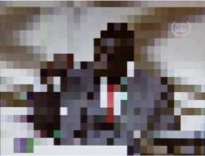
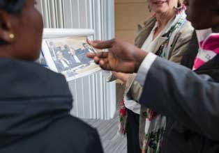

1. Why and how a case starts
The Court’s mandate is to try individuals - rather than States - for the most serious crimes of concern to the international community. The Rome Statute and Elements of Crimes defines four such crimes within the Court’s jurisdiction.
Crimes against humanity
Acts committed as part of a widespread or systematic attack directed against any civilian population.
Forcible transfer of population is a crime against humanity. This image is of a woman living in Kassab Camp for Internally Displaced People (IDPs) in Kutum, North Darfur, 2012.
See the full definition of crimes against humanity in Elements of Crimes
War crimes
Grave breaches of the Geneva Conventions.
Mutilation is a war crime. Konsi was mutilated in the context of the conflict in northern Uganda. She was thereafter abandoned by her husband to raise their three children alone, and stigmatized by her community. The Trust Fund for Victims supported her surgery for her nose, forehead, and upper lip.
Genocide
Acts committed with the intent to destroy, in whole or in part, a national, ethnical, racial or religious group.
Example?
See the full definition of genoside in Elements of Crimes
Crime of aggression
The planning, preparation, initiation or execution of an act of using armed force by a State against the sovereignty, territorial integrity or political independence of another State.
This crime was adopted in 2010, but jurisdiction over it remains subject to decisions and ratifications by State Parties set to take place in 2017.
2. The Prosecutor begins a preliminary examination
The Office of the Prosecutor can begin to examine crimes in four ways:
- States Parties to the Rome Statute can refer a situation to the Prosecutor. Five situations - DRC, Uganda, CAR, Côte d’Ivoire and Mali.
- A state which is not a State Party can decide to accept the jurisdiction of the Court.
- The United Nations Security Council can request the Prosecutor to launch an investigation. Two situations - Darfur, Sudan and Libya.
- With prior authorization from the ICC Judges, the Office of the Prosecutor may initiate investigations proprio motu (on its own initiative) based on information received from reliable sources. One situation - Kenya.
The Office of the Prosecutor receives information about alleged crimes from a wide range of sources. Between 2002 and 2012, the OTP received nearly 10,000 communications from individuals, groups, States, intergovernmental and non-governmental organisations.
Once the OTP receives information or a referral, it must determine if the crimes meet the legal criteria established by the Rome Statute to warrant investigation by the Court.
The Prosecutor must establish whether the crime of genocide, crimes against humanity or war crimes have been committed and, if so, whether they were committed after 1 July 2002 (the date the Court was established).
It must also determine whether any national authorities are conducting a genuine investigation or trial of the alleged perpetrators of the crimes. It must also notify the States Parties and other States which may have jurisdiction of its intention to initiate an investigation. This fundamental principal is known as “complementarity”.
The Office of the Prosecutor sends its investigators to collect evidence in areas where crimes are alleged to have been committed. The investigators must be careful not to create any risk to the victims are witnesses. The Office of the Prosecutor also requests the cooperation and assistance of States and international organisations. The investigators look for evidence of a suspect’s guilt or innocence.
The OTP has published information about 19 preliminary examinations.
3. Judges verify facts and issue warrant of arrest
Only a Pre-Trial Chamber at the ICC has the power to issue a warrant of arrest or a summons to appear.
The Prosecution provides the judges with information such as:
- The name of the person
- A description of the crimes the person is believed to have committed
- A concise summary of the facts (the acts alleged to be crimes)
- A summary of the evidence against the person
- The reasons why the Prosecution believes that it is necessary to arrest the person
The judges will only issue a warrant of arrest or summons to appear if there are reasonable grounds to believe that the person concerned has committed a crime within the ICC’s jurisdiction.
Arrest warrant
The judges will issue a warrant of arrest if it appears necessary to ensure that the person will actually appear at trial, that he or she will not obstruct or endanger the investigation or the Court’s proceedings, or to prevent the person from continuing to commit crimes.
Summons to appear
The judges will issue a summonses to appear if it is satisfied that summonses are sufficient to ensure the suspect’s appearance before the Court. The judges set a date for the initial appearance along with any other conditions. If the suspect fails to comply with any of these obligations, the judges may decide to issue a warrant of arrest.
4. Registrar asks states for co-operation
The responsibility to enforce warrants of arrest in all cases lies with States.
The Registrar transmits requests for cooperation seeking the arrest and surrender of the suspect to the relevant State or to other States, depending on the decision of the judges in each case.
States Parties to the Rome Statute have a legal obligation to cooperate with the ICC. If a State Party fails to comply with a request to cooperate, the Court may refer the matter to the Assembly of States Parties.
For a UN Security Council referral, all UN Member States have a duty to cooperate, regardless of whether or not they are a Party to the Statute.
Once issued, even in cases where arrests are delayed, arrest warrants are valid for life.
The Rome Statute system
5. Arrest and transfer to The Hague
Once arrested, detainees are held at the ICC Detention Centre in The Hague, The Netherlands.
The centre conforms with the highest international human rights standards for the treatment of detainees, such as the United Nations Standard Minimum Rules.
If convicted detainees are transferred to a prison in a State designated by the Court from a list of States which have indicated their willingness to allow convicted persons to serve their sentence there.
Rights of suspects
Suspects are presumed innocent until proven guilty. They are present in the courtroom during the trial, and they have a right to a public, fair and impartial hearing of their case.
Suspects have the right to legal assistance. If the suspect does not have the means to pay for it, the Court will assign legal assistance.
See full list of the rights of the suspects in Article 67 of the Rome Statute
6. Confirmation of charges before trial
First appearance
The suspect’s first appearance before the Court takes place shortly after his or her arrival in The Hague. During the first appearance, the Pre-Trial Chamber confirms the identity of the suspect, ensures that the suspect understands the charges, confirms that language in which the proceedings should be conducted, and sets a date to begin the confirmation of charges hearing.
Confirmation of charges
At the confirmation of charges hearing – which is not a trial, but a pre-trial hearing – the Prosecution must present sufficient evidence for the case to go to trial. The purpose of the confirmation hearing is to safeguard the rights of suspects by preventing proceedings with insufficient legal basis from being brought against them.
The suspect’s defence may object to the charges, challenge the Prosecution’s evidence and also present evidence.
If one or more charge is confirmed, the case is committed to trial before a Trial Chamber.
7. Protection of witnesses and participation of victims
Witnesses at the ICC
A witness is a person - an expert, victim or any other person who has witnessed crimes - who testifies before the Court giving a statement as evidence.
Witnesses are chosen based on the relevance of their testimony, their reliability and their credibility. Before testifying, each witness makes an undertaking to tell the truth. The judges assess all evidence submitted to determine its relevance or admissibility. The Court can fine or imprison witnesses who give false testimony.
Witness protection
The Court protects people at risk on account of their testimony in various ways from face and voice distortion to using pseudonyms.
As a last resort, witnesses and close relatives can be relocated under the Court’s Protection Programme.
Witness support
ICC staff in the Victims and Witnesses Unit’s (VWU’s) offer various means of practical support from setting up video links for witnesses testifying from home to obtaining visas for witness travelling to The Hague.
Through a process called "familiarisation", VMU's staff explain trial procedure and the courtroom layout to make giving evidence less daunting.
Victims at the ICC
A victim is a person who has suffered harm as a result of the commission of a crime within the ICC’s jurisdiction. Victims before the ICC have the right to participate in proceedings and seek reparation for the harm they have suffered.